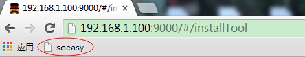
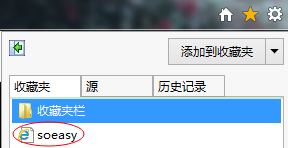

拖入收藏栏
安装方法
按住鼠标左键不放，将
搜藏神器拖入浏览器收藏栏，松开鼠标即可。

使用方法
- 浏览到感兴趣的网页时点击收藏栏的“搜集神器”标签，即可打开收藏面板
- 在收藏面板中用Soeasy的帐号登录
- 输入该网址的关键字，选择收藏夹，点击收藏，即可完成收藏。
- 进入Soeasy个人空间，打开相应的收藏夹即可浏览所有收藏
添加到收藏夹
安装方法
右键点击
搜藏神器，在弹出菜单中选择“添加到收藏夹”

使用方法
- 浏览到感兴趣的网页时点击收藏夹中的“搜集神器”菜单，即可打开收藏面板
- 在收藏面板中用Soeasy的帐号登录
- 输入该网址的关键字，选择收藏夹，点击收藏，即可完成收藏。
- 进入Soeasy个人空间，打开相应的收藏夹即可浏览所有收藏